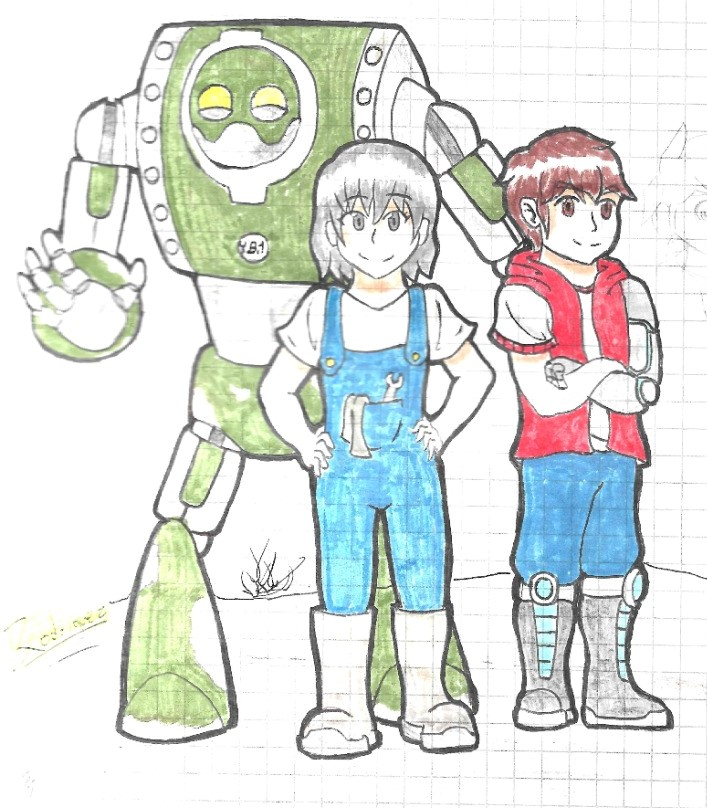
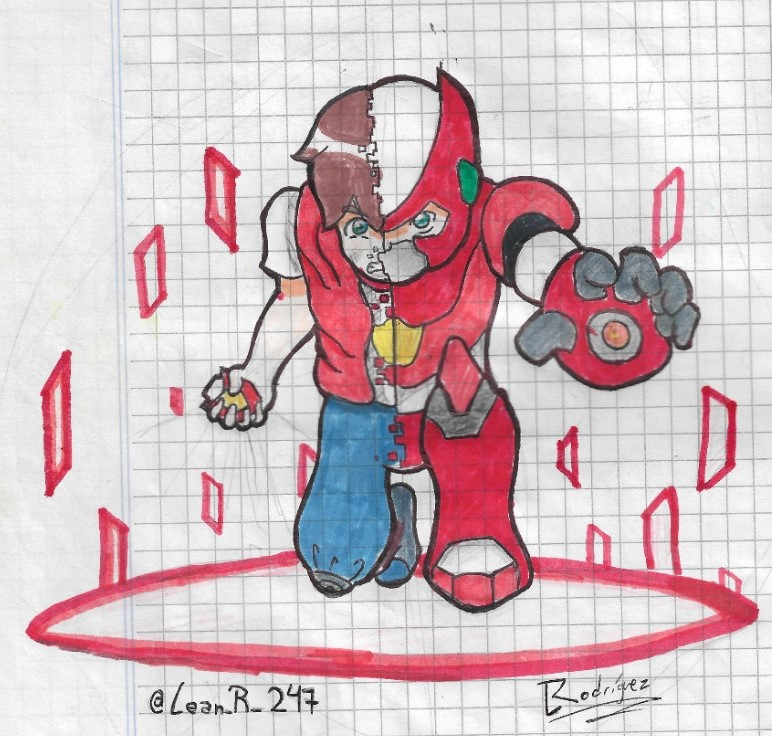
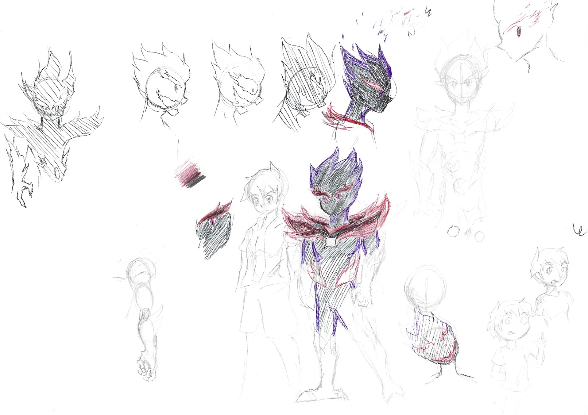
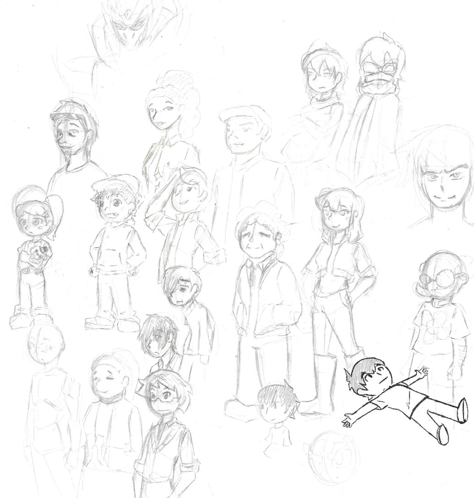
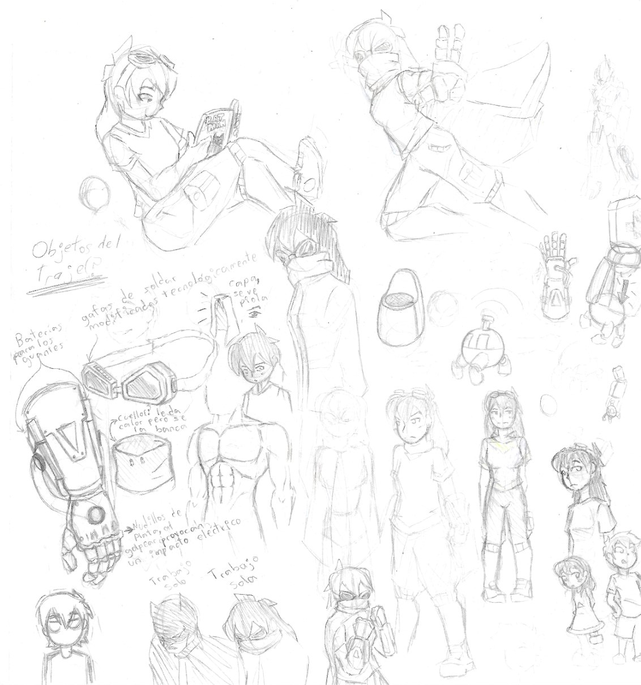
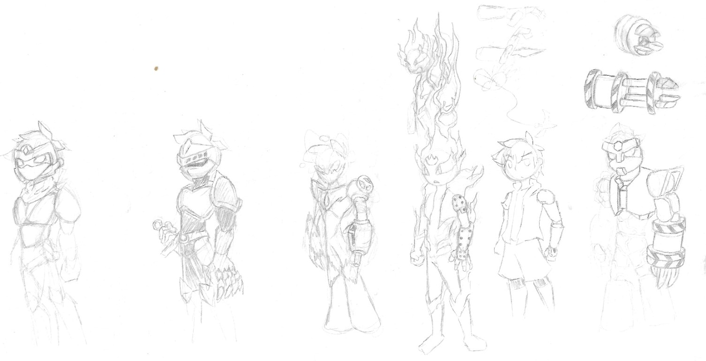
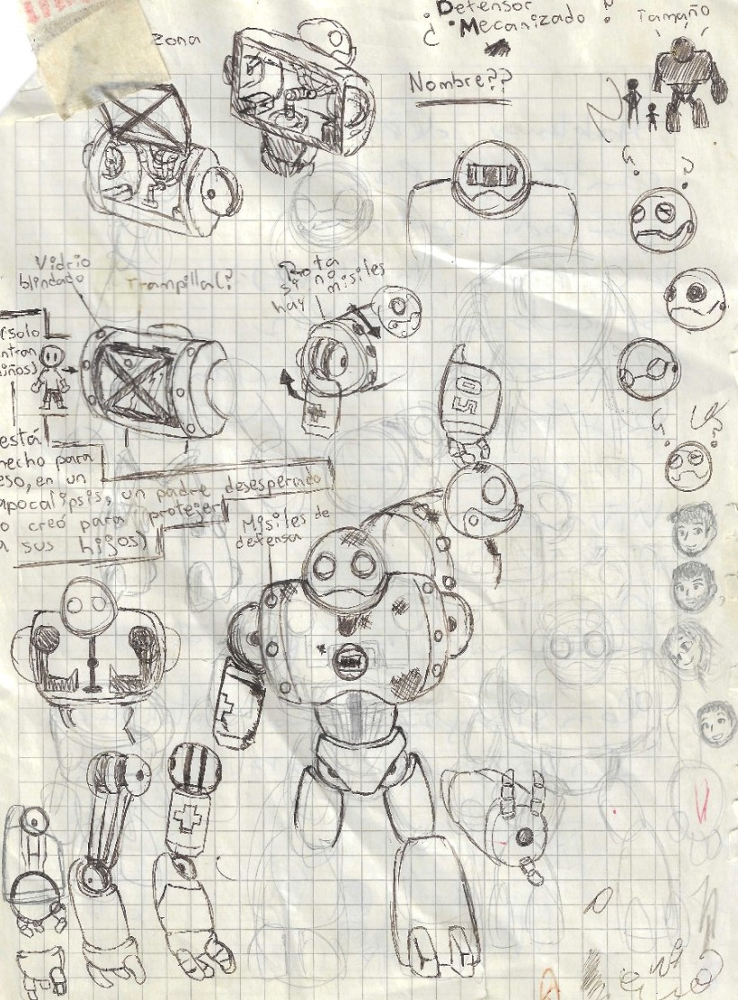
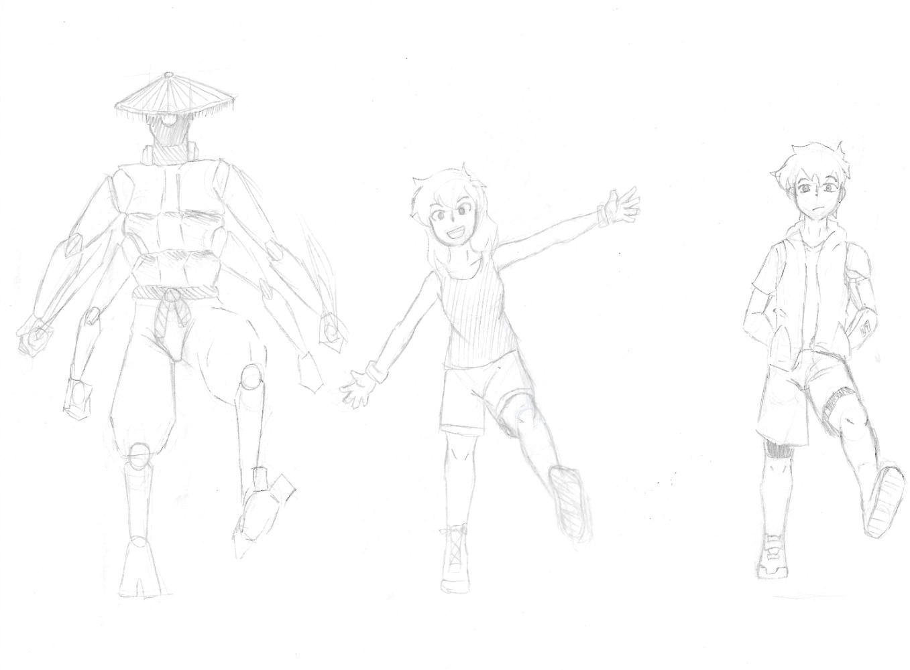

Bocetos
Este proyecto no nació siendo lo que es ahora, todo tuvo su proceso, y en esta sección quiero mostrar esa evolución por la que pasó durante estos años
Como dije, este proyecto no nació siendo ya lo que es, tuvo un inicio bastante oscuro diría yo, los personajes tienen un diseño muy simple que fui cambiando con el tiempo, lo que si ha cambiado mucho, es la trama, imaginen una historia apocaliptica con aliens, futurista y cristales mágicos, y aunque probablemente habrán autores que sabrían juntar eso, yo apenas estaba comenzando, así que imagínenlo de la peor forma posible jaja
La historia era bastante bizzarra y oscura, tenía cristales mágicos que otorgaban una armadura, no me siento orgullose de haber creado esto
Si bien la historia era mala, hay cosas que me agradaron y decidí llevarlas al "reinicio", com este diseño, que originalmente sería el resultado de fusionar dos cristales mágicos (les dije que era mala, no le den mucha importancia)
Otra cosa que traté de mantener fueron los personajes secundarios, si bien estos son los diseños iniciales, lo que vendría siendo su personabilidad y aporte en la trama es el mismo, fue de las pocas cosas que pude manejar bien jaja
Madeline, un personaje bastante importante en la trama, nunca tuve bien en claro el diseño que quería darle, llegando a hacer hasta 4 diseños si no me equivoco, finalmente logré llegar a uno que me agradaba, lo pueden encontrar en mi instagram
Recuerdo que cuando empezé a hacer la historia yo me encontraba jugando al videojuego "megaman zx", supongo que eso influyó bastante en esa muy mala historia que hice en un inicio
Gaco es el personaje con quien más me encariñé, si bien el primer diseño no me desagradaba, lo notaba con muy poca movilidad, y no parecía poder cumplir su función, que era resguardar a los niños en su cuerpo, así que me puse manos a la obra teniendo en cuenta las funciones que buscaba que cumpla, y a la vez tener un diseño amigable
finalmente después de un buen tiempo tenía una historia sólida, y varios diseños agradables, y entre los protagonistas, la que más cambió fue Amber, a diferencia de su primer diseño, decidí darle un aspecto y personalidad rebelde, quería resaltar la diferencia del cómo quería vivir cada uno de los hermanos.
Y el robot del lado izquierdo es un antagonista que planeo agregar en algún punto de la trama, mi hermano Hernan Gaínza me ayudó a crearlo (cabe mencionar que este es un diseño muy viejo, actualmente tiene una forma más robótica)
No creo que sea correcto, pero bien, quiero mostrar algo de lo que es la trama actual, y lo haré con uno de los antagonistas, es alguien muy fuerte y, aunque se vea muy simple, su historia de origen es muy oscura, no los decepcionará